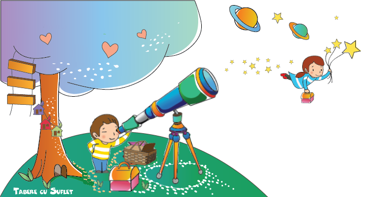

#Viziune
Viziunea Tabere cu Suflet este o Lume mai Buna, bazata pe Umanitate si Intelegere pentru cei din jur!
#Misiune
Menirea noastra este sa impartasim acesta Viziune, a unei Lumi mai bune, si sa o construim impreuna, cu speranta ca puterea exemplului poate schimba viitorul!
#Valori
"Valorile sunt acele lucruri pentru care nu suntem dispusi sa facem compromisuri" Mai multe citate
Pentru noi, Valorile sunt niste nestemate ce stralucesc asemenea unor stele in noapte, calauzindu-ne si aratandu-ne calea. Iar diadema Valorilor Tabere cu Suflet cuprinde nu mai putin de sapte astfel de Pietre pretioase 💎
1. Umanitate
Humanitas super omnia [Umanitatea inainte de toate. - Din lat.] Mai multe citate
[UMANITÁTE s. f., Sentiment de bunăvoință, compasiune pentru nenorocirile altuia, bunătate, omenie, umanitarism. – Din lat. humanitas, -atis, fr. humanité.]
Umanitatea inseamna in primul rand sa ne gandim, cu bunatate, la ceilalti.
Programele WeCare, prin care sprijinim pe cei aflati in nevoie, s-au nascut tocmai din acest crez. Initial ne-am propus sa ajutam copiii fara posibilitati materiale sa poata veni in tabere, apoi programele s-au diversificat, astfel ca acum sunt sprijiniti si adultii, persoanele cu handicap sau varstnicii.
Numele WeCare [Noua ne pasa, din lb eng.] nu a fost ales intamplator, căci ne pasa, ne gandim la ceilalti si ne dorim ca si cei care vin cu noi sa se gandeasca la ceilalti:)
2. Integritate
O alta Valoare este Integritatea, in sensul de Onestitate.
[INTEGRITÁTE s. f. 1. Însușirea de a fi integru; cinste, probitate, onestitate; incoruptibilitate. – Din fr. intégrité.]
Odata, la un Weekend Activ pe 2 roti la Comana,
am ajuns la o raspantie cu doua variante de intoarcere, una mai lunga si alta mai scurta. Dupa ce sunt prezentate optiunile, o mamica ce isi dorea varianta lunga ne face un semn discret sa pacalim copilul, care era obosit si voia sa ajunga mai repede la masina, astfel incat sa aleaga totusi traseul lung. Asa ca am spus un mic neadevar, insa copilul isi da seama imediat cum stau lucrurile!
Am ales asadar Calea Adevarului deoarece solutia nu este sa spunem ne-adevaruri!
Caci "Calea Adevarului este, pana la urma, cea mai scurta!"
3. Responsabilitate
Unul din principalele obiective ale competitiilor organizate de Asociatia Tabere cu Suflet, care strang anual sute si chiar mii de concurenti de toate varstele, adulti sau copii, este Satisfactia 100%. Căci Responsabilitate inseamna Respect si Dedicare!
Urmand aceeasi cale si in Tabere, ne aplecam cu multa dragoste si dedicare asupra Copiilor. Deoarece "Succesul nu se masoara in sume de bani, faima sau putere, ci in stralucirea din ochii Copiilor." Mai multe citate
Trebuie facuta totusi mentiunea ca taberele sunt destinate in primul rand Copiilor, adultii fiind primiti doar in cazurile speciale.
4. Educatie
"Miza Educatiei este Umanitatea!" Mai multe citate
Educatia inseamna Transmitere a Valorilor, adica Umanitate, Respect etc.
De aceea, inainte de a invata copiii sa schieze, sa calareasca si cate si mai cate, trebuie sa invatam sa fim Oameni. Si sa le transmitem si lor aceste Valori
Odata, un parinte ne-a intrebat cum ar putea copilul lui sa lucreze cu noi, ca instructor de schi. Ne-am bucurat căci era un copil care ne era foarte drag. Il stiam de la 6 ani, de cand venise prima oara in Tabere cu Suflet, iar acum tocmai implinise 16 ani! I-am spus ca il primim cu drag, insa unele tabere sunt in afara vacantei si ca nu incurajam absentele la scoala. "Apreciez la greu ce ii invatati voi acolo, e mai important decat scoala" ne-a spus parintele, coplesindu-ne cu increderea sa si dandu-ne putere sa mergem mai departe! Asa a aparut programul WeCare Aripi pentru Viitor
5. Incredere
Tabara este un grup si, la fel ca orice grup, functioneaza in deplina armonie daca membrii sai impartasesc aceleasi Valori si au incredere unii in altii.
Asa cum parintii au nevoie de incredere pentru a-si putea lasa copilul in tabara, si noi avem nevoie de increderea lor, pentru a putea oferi o experienta placuta si utila copiilor! De aceea oferim Incredere si Seriozitate, si speram sa primim in schimb acelasi lucru.
Este o Punte a Increderii, iar pentru construirea ei am creat un program dedicat.
6. Siguranta
Cineva ne-a intrebat cum de avem curajul sa lucram cu copii si sa facem tot felul de activitati considerate extreme: sa ne cataram, sa urcam pe Via Ferrata, sa facem scufundari etc.
Raspunsul este simplu: aprecierea corecta a riscului si crearea circumstantelor. In plus, modul in care interactionam cu copiii ne permite sa le insuflam incredere si respect, ajutandu-i sa dobandeasca un comportament responsabil!
Nu in ultimul rand, ne bazam pe experienta de peste 20 de ani a instructorilor nostri certificati de Ministerul Educatiei Nationale si de Ministerul Muncii, Familiei si Protectiei Sociale, precum si de diferite organizatii internationale de prestigiu cum ar fi Asociatia Austriaca de Alpinism (ÖAV) sau Asociatia Internationala a Instructorilor de Schi (ISIA).
7. Respect pentru Natura
Programele noastre, fie ca este vorba de Tabere, Competitii, Weekenduri Active sau alte Activitati, se desfasoara Outdoor si au la baza respectul pentru resurse si implicit pentru Mama Natura. Asa ca Apropierea de Natura este un obiectiv important. Unul din lucrurile pe care le spunem copiilor in tabere este ca "in lume sunt milioane de oameni care sufera din lipsa de apa sau de mancare. Din respect pentru ei, este nevoie sa avem grija de resurse."
La un concurs National Geographic desfasurat in tabere, copiii au fost rugati sa aleaga o firma, apoi o culoare si un personaj din filme, reprezentative pentru acea firma. Mai multi copii au ales Tabere cu Suflet, culoarea verde si pe Groot - omul copac:) Nu in ultimul rand, conceptul Verde se regaseste si in culoarea initiala a siteului.